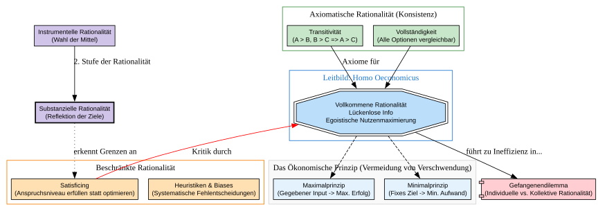

Code
import graphviz
from IPython.display import display
def create_rationality_map():
dot = graphviz.Digraph('RationalitaetsKonzepte', comment='Dimensions of Rationality')
dot.attr(rankdir='TB', size='12,12', compound='true')
dot.attr('node', fontname='Arial', fontsize='11', style='filled', shape='rectangle')
# 1. Das Fundament: Ökonomisches Prinzip
with dot.subgraph(name='cluster_eco_principle') as c:
c.attr(label='Das Ökonomische Prinzip (Vermeidung von Verschwendung)',
style='filled', color='lightgrey', fillcolor='#f9f9f9')
c.node('Max', 'Maximalprinzip\n(Gegebener Input -> Max. Erfolg)', fillcolor='#E3F2FD')
c.node('Min', 'Minimalprinzip\n(Fixes Ziel -> Min. Aufwand)', fillcolor='#E3F2FD')
# 2. Das klassische Modell
with dot.subgraph(name='cluster_homo') as h:
h.attr(label='Leitbild: Homo Oeconomicus', color='#1976D2', fontcolor='#1976D2')
h.node('HO', 'Vollkommene Rationalität\nLückenlose Info\nEgoistische Nutzenmaximierung',
shape='doubleoctagon', fillcolor='#BBDEFB')
# 3. Formale/Axiomatische Rationalität
with dot.subgraph(name='cluster_axioms') as a:
a.attr(label='Axiomatische Rationalität (Konsistenz)', color='#388E3C')
a.node('Trans', 'Transitivität\n(A > B, B > C => A > C)', fillcolor='#C8E6C9')
a.node('Comp', 'Vollständigkeit\n(Alle Optionen vergleichbar)', fillcolor='#C8E6C9')
# 4. Die Realität: Beschränkte Rationalität
with dot.subgraph(name='cluster_bounded') as b:
b.attr(label='Beschränkte Rationalität', color='#F57C00')
b.node('Sat', 'Satisficing\n(Anspruchsniveau erfüllen statt optimieren)', fillcolor='#FFE0B2')
h_node = 'Heuristiken & Biases\n(Systematische Fehlentscheidungen)'
b.node('Heur', h_node, fillcolor='#FFE0B2')
# 5. Soziale & Philosophische Dimension
dot.node('PD', 'Gefangenendilemma\n(Individuelle vs. Kollektive Rationalität)',
shape='component', fillcolor='#FFCDD2')
dot.node('Instr', 'Instrumentelle Rationalität\n(Wahl der Mittel)', fillcolor='#D1C4E9')
dot.node('Subst', 'Substanzielle Rationalität\n(Reflektion der Ziele)', fillcolor='#D1C4E9', penwidth='2')
# Verbindungen
dot.edge('HO', 'Max', style='dashed')
dot.edge('HO', 'Min', style='dashed')
dot.edge('HO', 'PD', label='führt zu Ineffizienz in...')
dot.edge('HO', 'Sat', label='Kritik durch', color='red', arrowhead='none', dir='back')
dot.edge('Trans', 'HO', label='Axiome für')
dot.edge('Comp', 'HO')
dot.edge('Instr', 'Subst', label='2. Stufe der Rationalität')
dot.edge('Subst', 'Sat', label='erkennt Grenzen an', style='dotted')
return dot
# Visualisierung anzeigen
display(create_rationality_map())